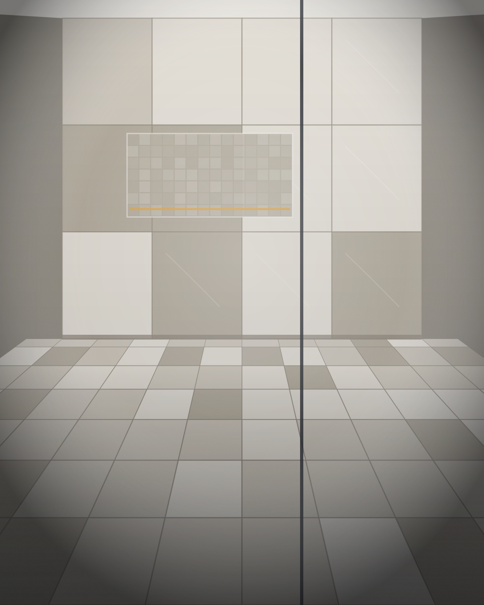
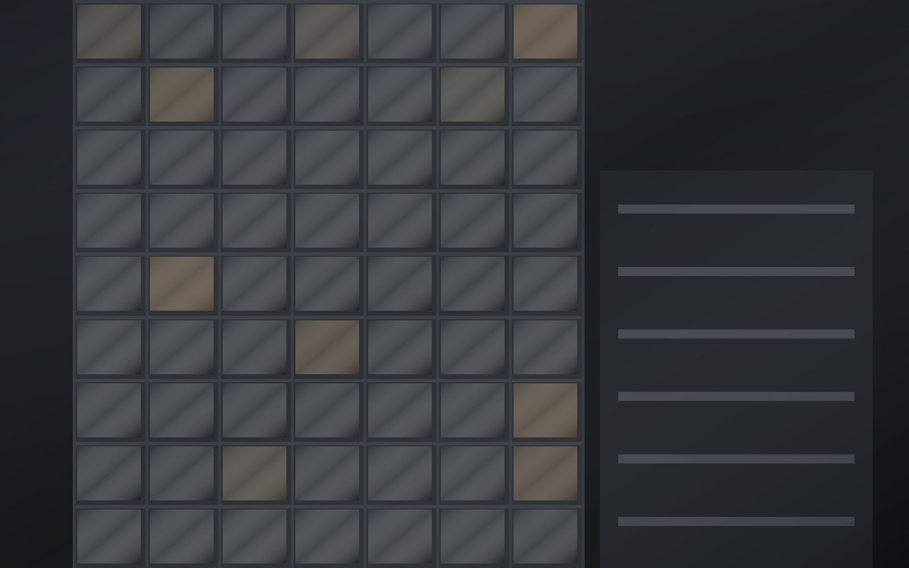

Lot spécialisé
Vous avez déjà un entrepreneur ? Nous intervenons uniquement sur le lot carrelage, en respectant la séquence établie par le chantier.
Nos services
Carrelage, gestion de chantier, construction et rénovation : trois expertises qui se répondent. Nous intervenons sur une portion précise d’un projet comme sur son ensemble.
01 — Service
Le carrelage est l’une des spécialités principales de l’entreprise.
La pose ne représente qu’une partie du travail. La préparation des surfaces, le calepinage, l’alignement, la gestion des coupes et le choix des joints déterminent le résultat final — et sa durabilité. Nous accordons à ces étapes le temps qu’elles demandent.

02 — Service
Un partenaire capable de coordonner les différentes étapes d’un projet.
« Un chantier bien géré permet de réduire les retards, d’améliorer la coordination entre les métiers et de maintenir une qualité d’exécution constante. Construction AVQ inc. assure un suivi structuré du projet afin que chaque étape soit réalisée au bon moment et selon les exigences du projet. »

03 — Service
Les services d’entrepreneur général, du projet ponctuel au projet d’ensemble.
Construction AVQ inc. n’exécute pas elle-même tous les métiers. Notre rôle est de coordonner les différents intervenants et sous-traitants nécessaires au projet, lorsque applicable, et d’assumer la responsabilité de l’ensemble : séquence des travaux, qualité livrée, respect du calendrier.

Comment nous intervenons
Vous avez déjà un entrepreneur ? Nous intervenons uniquement sur le lot carrelage, en respectant la séquence établie par le chantier.
Vous gérez vos contrats directement, mais souhaitez un point de coordination unique pour organiser et suivre les travaux.
Nous prenons en charge le projet de bout en bout : planification, sous-traitants, exécution, suivi et livraison.
Questions fréquentes

Parlons de votre projet
Que vous planifiiez une rénovation, un projet de construction, des travaux de carrelage ou que vous ayez besoin d’une gestion efficace de votre chantier, Construction AVQ inc. est là pour vous accompagner.